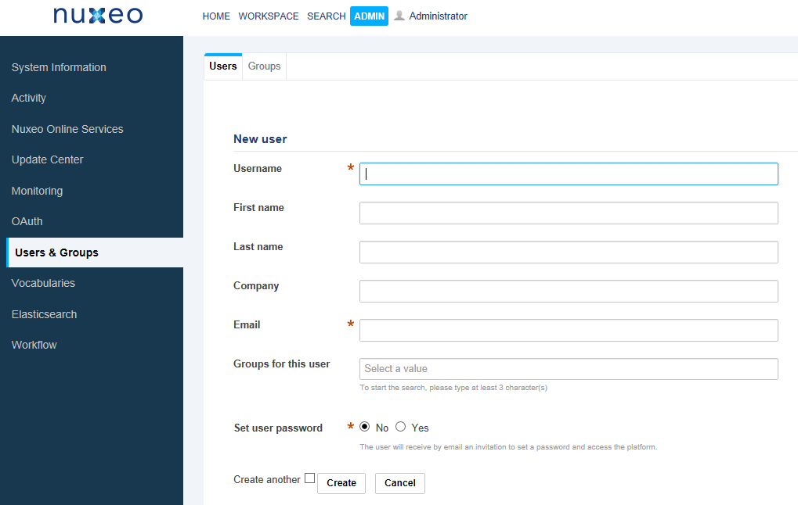
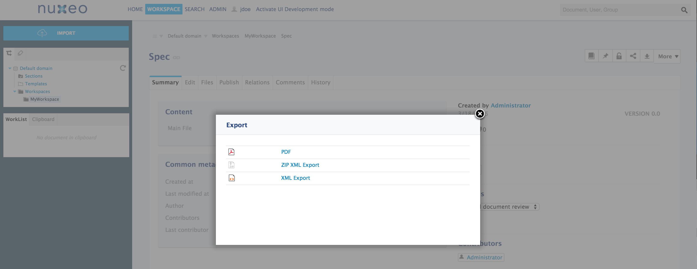
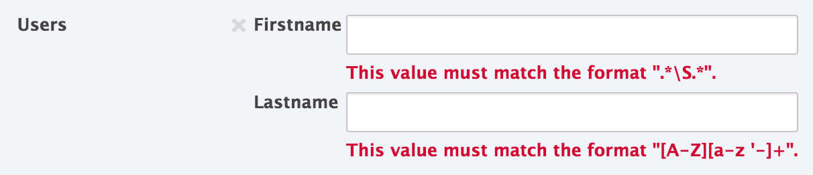

Nuxeo Platform 7.2 Release Notes
For Users
Improved Breadcrumb
Breadcrumb behaviour has been greately improved. User can switch from the breadcrumb to another domain or another repository. And it is possible to go to the top hierarchy in one click.
Exports and Renditions
The "Export Options" action and view has been removed. It is replaced with the "Export" action on a document.
The Export action lists all available renditions on a document, including the default exports.
Picture Document Type
IPTC metadata are extracted and stored on the dublincore schema: source, copyrights (>dc:rights), legend (> dc:description) instead of on a dedicated schema.
CSV Import
Importing documents through a CSV file now supports JSON-encoded complex properties.
Agenda
The Agenda addon now works on a default Nuxeo Platform, the OpenSocial dependency has been removed.
JavaScript List Widget
The List widget is now using JavaScript calls to add/remove elements, making it more user friendly. It also allows to keep an uploading file path when a file widget is used inside the list.
Chained Vocabulary Widget Error on First Selection
The Chained vocabulary widget used to display an error "Incomplete Selections are not allowed" when selecting the first element (and before submitting the form). This bug is now fixed.
Template Rendering Parameters
The steps to add and edit parameters in a template have been simplified and completed. In the Parameters configuration box, user is guided to know explicitely what she can add, edit and update. The form has been updated to make user more confident in her edits.
Thumbnails Are Generated For Videos
Instead of the full resolution picture which was long to load, a thumbnail adapted resolution is now used for displaying video content in thumbnails view.
User Creation/Invitation Page | UI Ergonomy Improvements
The user creation/invitation page has been improved to now use smarter Ajax refresh to not clean all the form when switching between invitation or creation. Also the set of buttons is now less confusing, using only two buttons, 'create' or 'cancel', and a checkbox if you want to create another user/group.

For Developers
Exports and Renditions
A lot of work has been done around renditions so as to make the rendition concept the standard way to handle binary transformations of documents.
- Rendition definitions can now also be contributed through a class implementing the inferface RenditionDefinitionProvider. When asked for the list of rendition definitions for a document, all matching RenditionDefinitionProviders are called to compute dynamic rendition definitions.
- RenditionDefinitions and RenditionDefinitionProviders can be filtered through standard filters.
- Transcoded videos are exposed as renditions (but not visible in the UI).
- Picture conversions are also exposed as renditions (but not visible in the UI).
- The default exports (XML export, ZIP Tree Export, ...) have been migrated to be exposed as standard renditions, thanks to the new ExportDocument operation. 
Automation: Scripting and Major Renaming.
Automation Scripting
Automation scripting is a new platform service that allows to deploy at runtime new operations defined via a JavaScript script. Those scripts are executed serverside with Nashorn. In those scripts, developer has access to all automation operations. Scripts can be edited in Nuxeo Studio.
Global Renaming
We have renamed most of the operations so as to provide better readability. The label is now equal to the id of the operation in most of the cases. The following documentation lists renamed operations. Compatibility has been kept with aliases.
Workflow REST API
Endpoints have been added for controlling workflow engine remotely: start workflow instances, complete tasks, query opened tasks and much more. A sample javascript application has been implemented for demonstrating the use of this API. This application is also provided as marketplace package.
Nuxeo JavaScript Client
Some improvements have been done to the JS client during this release:
- Added Document.copy and Document.move methods
- Added proxy and portal authentication to Node.js client
- Increased default timeout from 3000 to 30000 ms
- Fixed delete request
Note that the authentication configuration has changed, see the Migrating from 0.3.x part.
Elasticsearch
New Elasticsearch Admin API to Wait for Indexing Completion
The following documentation explains how to migrate code from VCS to DB using this new API.
Support Properties on Select Clause Using Elasticsearch
It is now possible to select scalar fields instead of documents from Elasticsearch API. Note that aggregate (COUNT, MAX, MIN, SUM, AVG) are not yet supported.
Visit the following documentation for more information.
Field Constraints, Extended fields and Validation
It is now possible to set field constraints and define references on the schema XSD definition. This validation is performed when submitting a document form.
Visit the "Field Constraints and Validation" documentation and the "How to Customize Document Validation" documentation for more information and the layout showcase for a small demo.

Plugable JSON Marshalling
Nuxeo provides a way to define reusable Marshallers. Each registered marshaller can be used and aggregated. Nuxeo provides built-in and reusable marshallers for many Nuxeo based objects. All marshallers can be used in a web context or in a server side context (for example, JSON could be logged in audit or used with non HTTP connectors).
Visit the following documentation for more information.
Management of Document's Updates
The dirty flag of document's properties is now more accurate. A property is dirty only if its value has changed. When a document has version 1.0, a 1.0+ version is created while editing only if some property changed. The update's date and the list of contributors are updated only if there were changes (Previously, simply save the document caused the updates, even with identical values).
Dublincore's Extended Fields
"dc:creator", "dc:lastContributor" and "dc:contributors" are now defined as references to Nuxeo users. "dc:subjects", "dc:nature" and "dc:coverage" are now defined as references to the corresponding directories. This provides all benefits from the validation and from the plugable JSON marshalling.
Blob Manager Service
Blob Access in lower layers is now made through a new service, Blob Manager, that provides pluggable implementations. This can be used for fetching blobs from remote storage services, like Google Drive or One Drive, or for handling smarter storage policies.
File Upload Widget Has Been made Extensible
The current JSF file upload widget (based on UIInputFile code) has been made pluggable in order to be able to create blobs not only based on an HTML file upload from the user's desktop but also based on other kinds of blob creation (for example using an existing file in Google Drive). See NXP-16551 for details on how to contribute an additional file picker.
ACL Related Queries
It is now possible to fetch documents depending on acls that are set on it thanks to a new NXQL system field: "ecm:acl". For instance: "SELECT * FROM Document WHERE ecm:acl/*/principal = 'bob'".
Transiant Store
A new service `TransientStoreService` has been added to `nuxeo-core-cache`. The goal is to provide a way to handle storage of temporary objects and streams. `TransientStoreService` can be seen as a high level and cluster compliant interface on top of a 2 levels Cache and Filesystem storage. This very first version was build to accommodate the requirements of asynchronous renditions, but we expect to have much more use cases soon.
Picture Document Type Evolutions
- The following documentation provides the new default contribution for binaries metadata extraction in the Nuxeo Platform. Main changes are that IPTC binary metadatas are mapped to Dublin Core schema (source, copyrights (> dc:rights), legend (> dc:description)), as an exemple of what can be done configuring the metadata extractor.
- Exif mapping remains identical.
- The widget "summary_picture_iptc" has been removed from document Summary.
- Mistral engine is removed. Use the Binary Metadata feature to extract metadata with custom engine. (The default one is ExifTool since 7.1).
JDK 1.8+ is required (version 8u25 minimum)
Java 8 update 25+ is required for building Nuxeo and the constraint has been set as an enforcement in the root
Nuxeo POM.
org.nuxeo:nuxeo-ecm
.
Some products like the Automation Client will still be compiled with Java 7 compliance (source and
target) for being usable in Java 7 runtime environments but Java 8 is still required to perform their build.
For Administrators
JDK 1.8+ is required (version 8u25 minimum)
ExifTool Setup | Third Party Software Requirement
The following documentation provides guidelines to download/setup ExifTool program. This tool is replacing Mistral for binaries metadata extraction.
Bridge CMISQL to Elasticsearch
To send the CMISQL queries to Elasticsearch, you can set the following property:
This will make your CMIS integration benefit from the scalability of the Elasticsearch engine.
Elasticsearch Reindexing Refactoring
The reindexing operations are now faster because of better parallelisation and improved usage of the Elasticsearch bulk mode. See the tuning options available.
The new Admin > Elasticsearch > Admin tab now displays much more options to reindex:
- Support for multi-repositories.
- Re-indexing the entire repository: Now it drops the index first.
- Re-indexing documents that match a NXQL query: There is no recursive indexation of children nor deletion of spurious documents from the index.
- Re-indexing a document and its children recursively: Before indexing, the document and its children are removed from Elasticsearch. This operation can be used to remove spurious documents from the index. You may experience incomplete search results during the re-indexing.
- Optimize all Elasticsearch indexes: The optimize process basically optimizes the index for faster search operations (and relates to the number of segments a Lucene index holds within each shard). The optimize operation allows to reduce the number of segments by merging them. Ask for a full optimization to a single segment. Note that this can potentially be a very heavy operation.
Mongodb HA Configuration
It is now possible to configure the db name, as well as the replica sets, the credentials and other options.
Property nuxeo.mongodb.dbname can be used to define the database name. The default is "nuxeo". Property nuxeo.mongodb.server can be used for credentials, replica sets, and options, as described in Mongodb documentation.
Nuxeo Drive Beta Channel
As Nuxeo Drive can now be configured to be updated through a beta channel, the beta update site URL is set in the Nuxeo server by the org.nuxeo.drive.beta.update.site.url property, whose default value is set to http://community.nuxeo.com/static/drive-tests/ in the nuxeo-drive Marketplace package. As any other Framework property it can be overridden in nuxeo.conf.
Recompute Picture Views
Recomputation of picture views can now be asynchronously launched in Admin > Imaging, through a NXQL query.

S3 BinaryManager and Big Files
AWS S3 connector has been improved for dealing with multi-part upload of big files, which allows to go over the previous limitation of 5 gigabits files.
Oracle 12 Support
Support of Oracle 12 has been validated.
Escaping Configuration Variables
The Nuxeo Platform now enables you to generate extensions containing variables resolved at runtime through the templating system. You can read more about it on JIRA and in the documentation.
Social Collaboration Migration
We wrote a SQL script to update data created with the Social Collaboration addon to be usable in a default Nuxeo Platform. The script can be found in the Social Collaboration GitHub reporsitory.